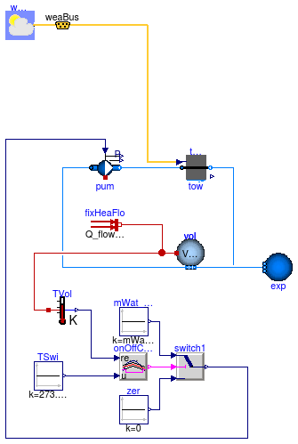
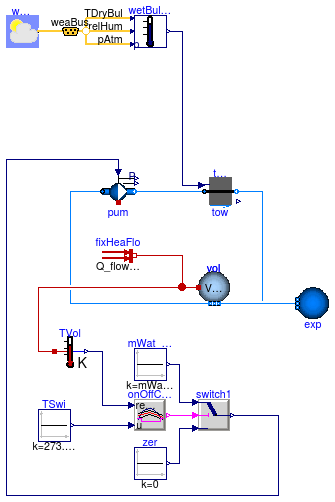

Collection of models that illustrate model use and test models
This package contains examples for the use of models that can be found in Buildings.Fluid.HeatExchangers.CoolingTowers.
Extends from Modelica.Icons.ExamplesPackage (Icon for packages containing runnable examples).
| Name | Description |
|---|---|
| Test model for cooling tower with fixed approach temperature using the dry-bulb temperature | |
| Test model for cooling tower with fixed approach temperature using the wet-bulb temperature | |
| Test model for cooling tower using the York performance correlation | |
| Package with base classes for Buildings.Fluid.HeatExchangers.CoolingTowers.Examples |
 Buildings.Fluid.HeatExchangers.CoolingTowers.Examples.FixedApproachDryBulb
Buildings.Fluid.HeatExchangers.CoolingTowers.Examples.FixedApproachDryBulb
Test model for cooling tower with fixed approach temperature using the dry-bulb temperature

vol. An on/off controller
switches the cooling loop water pump on or off based on the temperature of
this volume.
The cooling tower outlet temperature has a fixed approach temperature to the
outdoor dry-bulb temperature.
Extends from Modelica.Icons.Example (Icon for runnable examples), BaseClasses.PartialStaticTwoPortCoolingTower (Base class for test models of cooling towers).
| Type | Name | Default | Description |
|---|---|---|---|
| Nominal condition | |||
| MassFlowRate | mWat_flow_nominal | 0.5 | Design water flow rate [kg/s] |
| Type | Name | Description |
|---|---|---|
| Bus | weaBus |
Buildings.Fluid.HeatExchangers.CoolingTowers.Examples.FixedApproachWetBulb
Test model for cooling tower with fixed approach temperature using the wet-bulb temperature

vol. An on/off controller
switches the cooling loop water pump on or off based on the temperature of
this volume.
The cooling tower outlet temperature has a fixed approach temperature to the
outdoor wet-bulb temperature.
Extends from Modelica.Icons.Example (Icon for runnable examples), BaseClasses.PartialStaticTwoPortCoolingTowerWetBulb (Partial test model for cooling tower with wet bulb temperature as potential for heat transfer).
| Type | Name | Default | Description |
|---|---|---|---|
| Nominal condition | |||
| MassFlowRate | mWat_flow_nominal | 0.5 | Design water flow rate [kg/s] |
| Type | Name | Description |
|---|---|---|
| Bus | weaBus |
Buildings.Fluid.HeatExchangers.CoolingTowers.Examples.YorkCalc
Test model for cooling tower using the York performance correlation

vol. An on/off controller
switches the cooling loop water pump on or off based on the temperature of
this volume.
The cooling tower outlet temperature is controlled to track a fixed temperature.
Extends from Modelica.Icons.Example (Icon for runnable examples), BaseClasses.PartialStaticTwoPortCoolingTowerWetBulb (Partial test model for cooling tower with wet bulb temperature as potential for heat transfer).
| Type | Name | Default | Description |
|---|---|---|---|
| Nominal condition | |||
| MassFlowRate | mWat_flow_nominal | 0.5 | Design water flow rate [kg/s] |
| Type | Name | Description |
|---|---|---|
| Bus | weaBus |